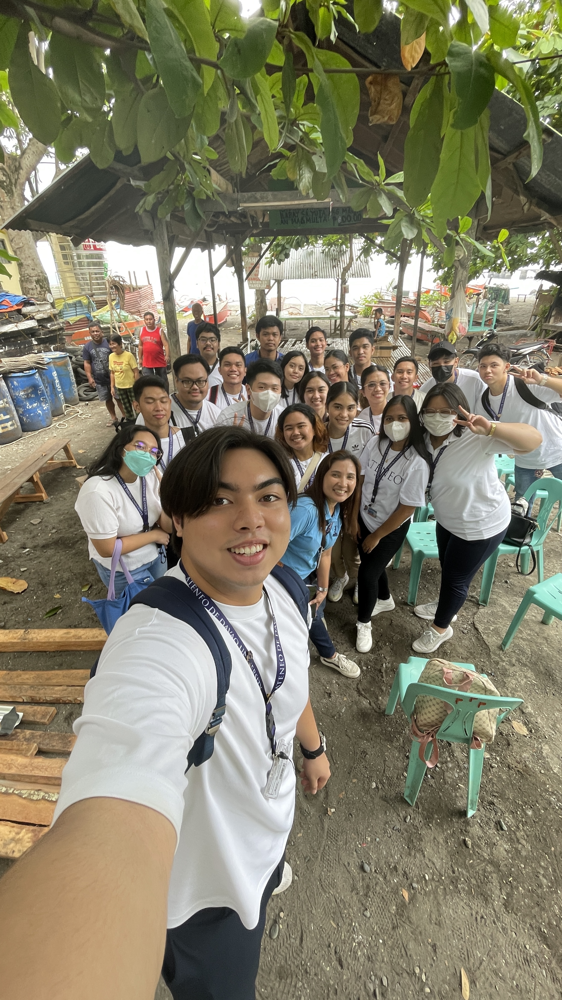
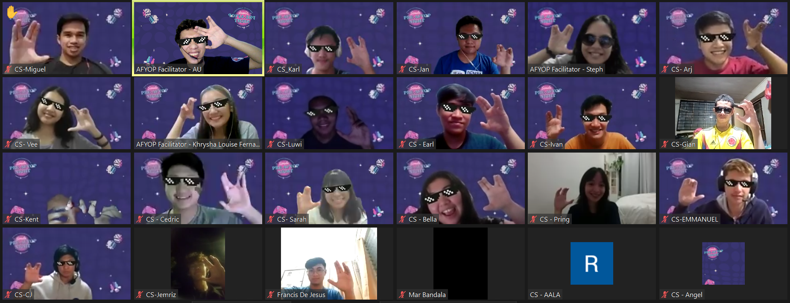

The Beginning
Adjusting, reconnecting, and learning to serve.
- Place
-
Home / Online Classes
This era was after the pandemic where a whole semester was held online. It was not easy to adjust due to two years without interacting with other people and a transition from High School to College.
- Event/Activity
-
First time watching a school event (U-Fest)
Met my classmates and some of my seniors. It was fun due to how AdDU was prepared to host an event after the pandemic. It was an eye-opening experience where you meet other students and share experiences with them.
- Ignatian Value
-
Being Persons for and with Others
In our NSTP class, we helped a community in Toril. We fundraised money to buy materials for their water pump and to fix their “Purok”. It was a good experience to help other people and see how happy they are with small help from us.
- Moment of Becoming
-
NSTP Class
I realized that many people are in need but they are neglected. Which is why NSTP is a good course for us to be men and women for other people.
- Person of Gratitude
-
HS Friends and College Classmates
My HS friends and I were very close since we had a hard time getting to know other people. My college classmates were important even though we rarely saw each other due to the hybrid setup.